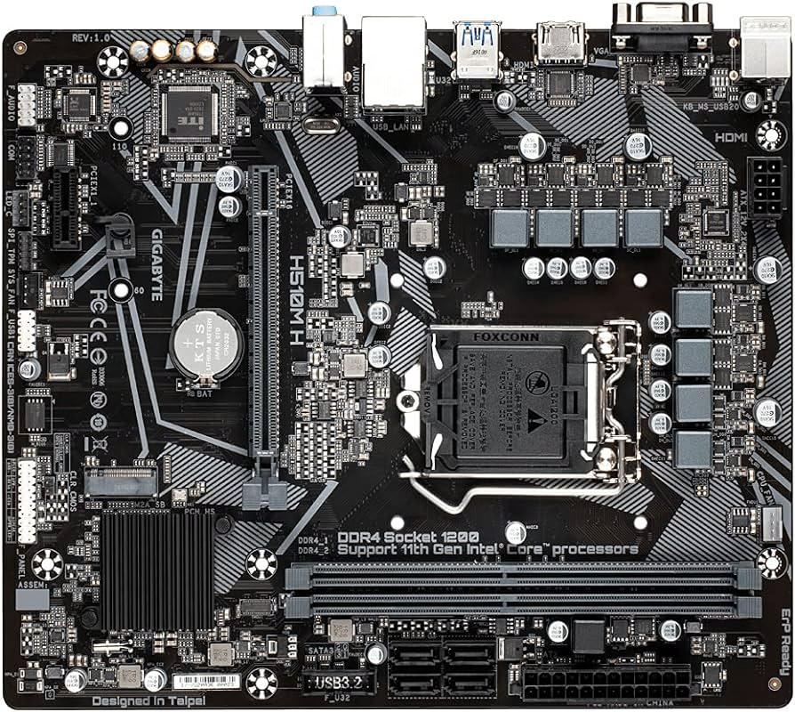

MARCA: GIGABYTE
MODELO: H510M H
Formato y Medidas:Micro ATX Form Factor; 24.4cm x 21.0cm
Marca de procesador compatible:Intel
Tipo de socket o zócalo:LGA1200
Chipset:Intel® H510 Express Chipset
Procesadores soportados:11th Generation Intel® Core™ i9 processors / Intel® Core™ i7 processors / Intel® Core™ i5 processors
10th Generation Intel® Core™ i9 processors / Intel® Core™ i7 processors / Intel® Core™ i5 processors / Intel® Core™ i3 processors/ Intel® Pentium® processors / Intel® Celeron® processors
Número de ranuras para memoria:2
Tipo de memoria:DDR4
Velocidades soportadas para la memoria (en MHz):Support for DDR4 3200/3000/2933/2666/2400/2133 MHz memory modules
Capacidad máxima de memoria soportada:64 GB
Capacidad máxima individual de las ranuras de memoria:2x
Dispositivos de almacenamiento soportados (discos M.2 o SATA):1 x M.2 y 4 x SATA
Conectores del panel trasero que conozcas:PS/2 keyboard/mouse port,D-Sub port,HDMI port,USB 3.2 Gen 1 ports,USB 2.0/1.1 ports,RJ-45 port,audio jacks.
Precio:Alrededor de 130 euros
Página Web Oficial:https://www.gigabyte.com/ar/Motherboard/H510M-H-rev-10-11-15#kf
Segunda parte
Responde a las siguientes preguntas acerca de la compatibilidad de piezas con la placa:
- ¿Podría conectar a la anterior placa base el siguiente disco (https://www.pccomponentes.com/crucial-mx500-ssd-500gb-sata) y utilizarlo para el almacenamiento de datos? ¿Por qué o por qué no? ¿A qué puerto se debería conectar este disco?
-Sí porque la placa base tiene puertos SATA y el disco es SATA
- ¿Podría conectar a la anterior placa base el siguiente disco (https://www.pccomponentes.com/samsung-980-ssd-1tb-pcie-30-nvme-m2) y utilizarlo para el almacenamiento de datos? ¿Por qué o por qué no? ¿A qué puerto se debería conectar este disco?
-Sí porque la placa base tiene puertos M.2 y el disco es un M.2
- Si me compro la siguiente memoria RAM (https://www.pccomponentes.com/corsair-vengeance-lpx-ddr4-3200mhz-pc4-25600-32gb-2x16gb-cl16), ¿podría conectarla a la anterior placa? ¿Por qué o por qué no?
-Sí ya que tiene dos ranuras y no supera la capacidad máxima de memorias soportadas.Las dos són DDR4
- Si me compro la siguiente memoria RAM (https://www.pccomponentes.com/kingston-fury-beast-ddr5-5200mhz-32gb-2x16gb-cl40), ¿podría conectarla a la anterior placa? ¿Por qué o por qué no?
-NO,Porque la memoria RAM es DDR5 y la placa tiene puerto para un DDR4
- Si me compro la siguiente memoria RAM (https://www.pccomponentes.com/corsair-vengeance-so-dimm-ddr4-3200mhz-pc4-25600-32gb-2x16gb-cl22), ¿podría conectarla a la anterior placa? ¿Por qué o por qué no?
-Sí ya que tiene dos ranuras y no supera la capacidad máxima de memorias soportadas.Las dos són DDR4
- Comprueba si los siguientes procesadores son compatibles con la placa base. No te olvides de justificar el por qué sí o por qué no son compatibles, si no no se tendrá en cuenta.
- Procesador 1 Sí,porque la placa base acepta un intel core i5
- Procesador 2 No,ya que no son compatibles porque el procesador es AMD
- Procesador 3 No,Porque aunque sea de la misma marca es de un modelo diferente
- Procesador 4 No,ya que no son compatibles porque el procesador es AMD
- Comprueba si podrías colocar la placa base en alguna de estas torres. Ten en cuenta el tamaño (formato) tanto de la placa como de las torres. Justifica el por qué sí o por qué no son compatibles.
- Torre 1 No es compatible porque solo acepta un ATX y no un Micro ATX
- Torre 2 No es compatible porque la torre pc no acepta el formato de la placa
- Torre 3 Es Compatible porque la torre pc acepta el formato de la placa
- Torre 4 Es Compatible porque la torre pc acepta el formato de la placa
- Indica, para cada una de estas pantallas, a qué puerto(s) de mi placa la podría conectar.
- Pantalla 1 A los puertos:Versión de conector USB: 2.0,Tipo de puerto USB de carga: USB Tipo B,puertos VGA (D-Sub),HDMI,Salida de auriculares,
- Pantalla 2 A los puertos HDMI y a los VGA
- ¿Esta placa podría conectarla a internet por cable, por Wi-Fi o por ambos? ¿Por qué? Justifica la respuesta.
Podrá conectarse solo por cable porque la placa tiene un puerto trasero compatible y pra el wifi no lo tiene
- Échale un ojo a 👉este teclado👈. ¿Podría conectarlo a la placa? Justifica la respuesta. En caso de respuesta afirmativa, indica a qué puerto se debería conectar.
Si que podrías conectarlo ya que la placa tiene varios puertos PS/2
- ¿Podría conectar una tarjeta gráfica estándar (PCIE x16) a la placa base? ¿Por qué o por qué no?
Si que se podria conectar ya que la placa base tiene una ranura x16
- Elige una torre y una fuente de alimentación compatibles con la placa base. Copia y pega el enlace de cada una de ellas e indica por qué son compatibles.
https://www.pccomponentes.com/mars-gaming-mc-s1-caja-pc-micro-atx-argb-usb-30-con-ventana-blanco Es compatible esta torre pc porque es una Micro ATX
https://www.pccomponentes.com/l-link-fuente-de-alimentacion-atx-500w Es compatible porque es ATX